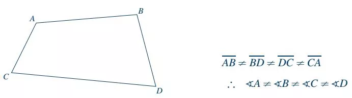

DefiniciónLos polígonos limitados por cuatro lados y que además forman entre sí cuatro ángulos se denominan cuadriláteros.
NotaciónTodo cuadrilátero se indica por las letras mayúsculas de sus vértices, escritos enseguida de su representación gráfica.
Propiedades1. Los lados opuestos son iguales y no tienen ningún vértice en común.
2. Los lados consecutivos tienen un vértice en común.
3. Los vértices y ángulos opuestos no pertenecen a un mismo lado, pero son ángulos iguales.
4. La suma de ángulos interiores es igual a cuatro rectos (360°).
5. Los ángulos adyacentes a un mismo lado son suplementarios, es decir, suman 180°.
6. Las diagonales se cortan en su punto medio.
7. El número total de diagonales que pueden trazarse siempre son dos y se cortan en un punto interior.
8. Desde un vértice sólo puede trazarse una diagonal.
Representación gráfica de las propiedades
ClasificaciónLos cuadriláteros se clasifican atendiendo a sus ángulos y a la forma de sus lados, es decir, al paralelismo de sus lados opuestos.
A) ParalelogramosSon cuadriláteros cuyos lados opuestos son paralelos entre sí. A su vez, los paralelogramos pueden ser:
Cuadrados. Es un paralelogramo que tiene sus ángulos y lados iguales.
Rectángulos. Es un paralelogramo que tiene sus lados contiguos desiguales, es decir, solamente sus lados opuestos son iguales; sus cuatro ángulos son rectos.
Rombos. Paralelogramos que tienen sus lados iguales y sus ángulos son oblicuos, es decir, sus
ángulos no son rectos; sus ángulos opuestos son iguales.
Romboides. Paralelogramo que tiene sus lados contiguos desiguales, es decir, solamente sus lados opuestos son iguales y sus ángulos son oblicuos.
B) TrapeciosSon cuadriláteros en los cuales únicamente dos de sus lados opuestos son paralelos, es decir, los que se llaman bases. A su vez, los trapecios pueden ser:
Trapecio escaleno. Es aquel que tiene los lados no paralelos desiguales.
Trapecio isósceles. Es aquel que tiene los lados no paralelos de igual longitud, formando con las bases ángulos adyacentes iguales.
Trapecio rectángulo. Es aquel que tiene un lado perpendicular a las bases, formando un ángulo recto con cada base.
C) TrapezoidesLos cuadriláteros cuyos lados opuestos no son paralelos entre sí se denominan trapezoides. A su vez, los trapezoides pueden ser:
Trapezoides simétricos. Son los que tienen dos pares de lados consecutivos iguales pero el primer par de lados consecutivos iguales es diferente del segundo.
Trapezoides asimétricos. Son aquellos que no ofrecen ninguna de las características de un trapezoide simétrico.

Trazos en cuadriláterosAl considerar los paralelogramos, observamos que:
Las diagonales se cortan en el punto medio de ambas; al punto de intersección se le llama centro de simetría. Si se trata de:
Un rombo, las diagonales son perpendiculares entre sí.
Un rectángulo, ambas diagonales tienen igual longitud.
Un cuadrado las diagonales cumplen con todas las condiciones anteriores.
En los trapecios se observan los siguientes trazos:
Los lados paralelos se llaman bases y como son desiguales, una se identifica como base menor y la otra como base mayor.
Se llama altura del trapecio a la distancia entre las bases, siendo la altura una perpendicular común a dichas bases.
A la recta que une los puntos medios de los lados no paralelos del trapecio se denomina paralela media o base media, cuya longitud es igual a la semisuma de las bases.